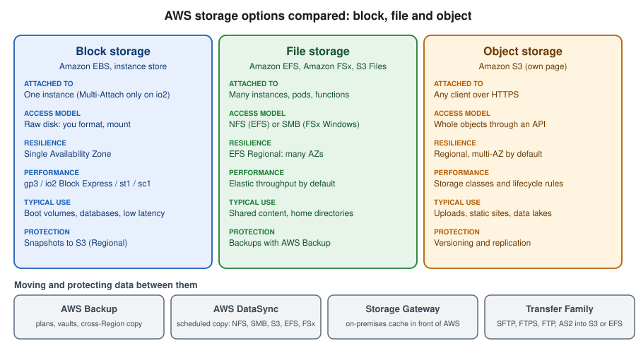

Block and File Storage on AWS
|
This content was generated with the assistance of AI and should be verified against the official documentation before being relied on in production. |
Examples on this page target AWS CLI 2.37 (2.37.7 was current when checked on 2026-10-01) and the AWS SDK
for Java 2.x; re-verify with aws --version and the AWS CLI User Guide.
Block and file storage is the part of AWS that behaves like the disks and network shares you already know: a block
device is a raw disk that one instance formats and mounts (Amazon EBS and the instance store), and a file system is a
shared directory tree that many clients mount over the network (Amazon EFS, Amazon FSx and Amazon S3 Files). Object
storage is a third model, covered in S3 Object Storage. In the Bookshelf scenario the
catalog-api instances from Amazon EC2 and Auto Scaling keep a data volume on EBS, while the report
exports written by the orders-api tasks (see ECS and Fargate) and read by the thumbnailer
function (see AWS Lambda) live on a shared EFS file system. The region us-east-1 and the account ID
111122223333 are placeholders.

Choosing between the options
| Option | Access model | Scope and durability | Choose it when |
|---|---|---|---|
EBS volume |
Block device attached to one instance (Multi-Attach for |
One Availability Zone, replicated inside it; snapshots go to S3 |
Boot and data volumes, databases you run yourself, low-latency random I/O |
Instance store |
Local NVMe or SSD disks in the host |
Lost on stop, terminate or host failure |
Caches, scratch space, data that is replicated elsewhere |
EFS |
NFS 4.1 file system, many clients at once |
Regional (several AZs) or One Zone |
Shared content, home directories, containers and functions that need a common directory |
FSx |
SMB, NFS, Lustre or ONTAP protocols depending on the flavour |
Single-AZ or Multi-AZ, per flavour |
Windows shares, HPC scratch, lift and shift of NetApp or ZFS workloads |
S3 Files |
NFS view of an S3 bucket or prefix |
Data stays in S3; active data cached on high-performance storage |
File-based tools that must work on data that lives in S3 |
S3 |
HTTPS API on whole objects |
Regional, multi-AZ by default |
Uploads, static sites, backups, data lakes |
A practical rule for new designs: keep application state in managed services, treat instances and tasks as disposable, use S3 for files an application uploads and serves, and reach for EBS or EFS only when the software needs a real disk or a real shared directory. Because an EBS volume is tied to one Availability Zone, a replacement instance in another zone cannot reattach it; shared state that must survive a zone failure belongs on a Regional EFS file system or in a managed database (see Amazon RDS).
Amazon EBS
Amazon Elastic Block Store provides durable, network-attached volumes for EC2 instances. A volume lives in one Availability Zone, can be detached from one instance and attached to another in the same zone, and can be resized and retuned while in use (Elastic Volumes). Instances reach their volumes over the network, so use EBS-optimised instance types (the default on current generations) to get the full performance.
Volume types
| Type | Class | Size | Maximum IOPS and throughput per volume | Typical use |
|---|---|---|---|---|
|
General Purpose SSD, the default |
1 GiB to 64 TiB |
80,000 IOPS, 2,000 MiB/s; IOPS and throughput are set independently of size above a baseline of 3,000 IOPS and 125 MiB/s |
Boot volumes, most databases, development and test |
|
General Purpose SSD, previous generation |
1 GiB to 16 TiB |
16,000 IOPS, 250 MiB/s; performance is tied to volume size |
Existing volumes only; migrate to |
|
Provisioned IOPS SSD |
4 GiB to 64 TiB |
256,000 IOPS, 4,000 MiB/s on Nitro instances; Multi-Attach and NVMe reservations supported |
Sub-millisecond latency, sustained IOPS, large databases |
|
Provisioned IOPS SSD, previous generation |
4 GiB to 16 TiB |
64,000 IOPS, 1,000 MiB/s |
Existing volumes; prefer |
|
Throughput Optimized HDD |
125 GiB to 16 TiB |
500 IOPS, 500 MiB/s |
Big data, log processing, streaming reads; not bootable |
|
Cold HDD |
125 GiB to 16 TiB |
250 IOPS, 250 MiB/s |
Infrequently accessed data at the lowest cost; not bootable |
The figures are the documented maximums on the page linked in the references and depend on the instance type, the I/O
size and the Region; always check the current limits before sizing. Older guides and tutorials still create gp2
volumes and size them to buy IOPS (3 IOPS per GiB); the current approach is gp3, where IOPS and throughput are
purchased separately from capacity and the same baseline comes with every volume. The magnetic standard type is a
previous-generation type kept for compatibility only.
In the AWS Management Console
-
Open EC2 and check the Region selector. Under Elastic Block Store choose Volumes, then Create volume.
-
Choose Volume type
gp3, set the Size (for example 50 GiB), and keep or raise IOPS and Throughput. -
Choose the same Availability Zone as the instance you will attach it to. This choice cannot be changed later.
-
Under Encryption tick Encrypt this volume and pick a KMS key (the default
aws/ebskey, or a customer managed key), then choose Create volume. -
Select the volume, choose Actions, Attach volume, pick the instance and a device name such as
/dev/sdf. -
Connect to the instance with Session Manager, then format and mount the device (the commands are in the CLI section).
-
To resize or retune later, select the volume and choose Actions, Modify volume; then grow the file system.
With the AWS CLI
export AWS_REGION=us-east-1
export AZ=us-east-1a
export INSTANCE_ID=i-0123456789abcdef0 # placeholder
# Create an encrypted gp3 volume with the baseline IOPS and throughput
VOLUME_ID=$(aws ec2 create-volume --availability-zone "$AZ" --volume-type gp3 \
--size 50 --iops 3000 --throughput 125 --encrypted \
--tag-specifications 'ResourceType=volume,Tags=[{Key=Name,Value=bookshelf-catalog-data}]' \
--query VolumeId --output text)
aws ec2 wait volume-available --volume-ids "$VOLUME_ID"
# Attach it to a running instance in the same Availability Zone
aws ec2 attach-volume --volume-id "$VOLUME_ID" --instance-id "$INSTANCE_ID" --device /dev/sdfInside the instance the volume appears as an NVMe device on Nitro instances (/dev/nvme1n1 for example, whatever
name you requested), so identify it by size or serial rather than by the name you passed:
lsblk # find the new, empty device
sudo mkfs -t xfs /dev/nvme1n1 # only for a new, empty volume
sudo mkdir -p /data
sudo mount /dev/nvme1n1 /data
sudo blkid /dev/nvme1n1 # use the UUID in /etc/fstab with the nofail optionReferences: Make an Amazon EBS volume available for use.
To change a volume without detaching it, modify it and then grow the partition and file system:
aws ec2 modify-volume --volume-id "$VOLUME_ID" --size 100 --iops 6000 --throughput 250
aws ec2 describe-volumes-modifications --volume-ids "$VOLUME_ID" \
--query "VolumesModifications[].[ModificationState,Progress]" --output text
sudo xfs_growfs -d /dataReferences: aws ec2 modify-volume, Modify an Amazon EBS volume using Elastic Volumes operations. A volume can be modified again only after a cool-down period, and a size can only grow.
Volumes created for an instance at launch can be deleted with it (DeleteOnTermination, true by default for the root
volume and false for additional volumes), so decide explicitly which data volumes must outlive the instance. Amazon ECS
can also attach EBS volumes to tasks at launch, which is an alternative to EFS for a single-task data disk (see
ECS and Fargate).
Snapshots
A snapshot is a point-in-time copy of a volume stored by EBS in Amazon S3. The first snapshot copies all written blocks and later snapshots store only the blocks that changed, but each snapshot can be restored on its own. Snapshots are Regional, can be copied to other Regions and shared with other accounts, and a volume restored from one is usable immediately while blocks are loaded lazily in the background (the first read of a block is slower; Fast Snapshot Restore and volume initialisation settings remove that penalty at extra cost). Related features:
-
Amazon Data Lifecycle Manager and AWS Backup create, retain and copy snapshots on a schedule (see Data protection and transfer).
-
The Recycle Bin keeps deleted snapshots and AMIs for a retention period you set.
-
Snapshot Archive is a lower-cost tier for snapshots you rarely restore, with a minimum retention period and a slower restore.
-
A snapshot of an encrypted volume is always encrypted with the same key, and an unencrypted snapshot can be re-encrypted by copying it.
Restore a single file from a snapshot
You do not restore a snapshot over the live volume to recover one file. Create a new volume from the snapshot, attach it to an instance, mount it read-only, copy the file, and delete the temporary volume.
-
In EC2, choose Snapshots, select the snapshot, then Actions, Create volume from snapshot. Pick the Availability Zone of the recovery instance and keep the volume type
gp3. -
Choose Volumes, select the new volume, Actions, Attach volume to the recovery instance.
-
Mount it read-only, copy the file, unmount it, then detach and delete the volume.
# Snapshot the data volume and wait until it is complete
SNAPSHOT_ID=$(aws ec2 create-snapshot --volume-id "$VOLUME_ID" \
--description "bookshelf-catalog-data before upgrade" \
--tag-specifications 'ResourceType=snapshot,Tags=[{Key=Name,Value=bookshelf-catalog-data}]' \
--query SnapshotId --output text)
aws ec2 wait snapshot-completed --snapshot-ids "$SNAPSHOT_ID"
# Later: create a volume from the snapshot in the recovery instance's zone and attach it
RESTORE_ID=$(aws ec2 create-volume --availability-zone "$AZ" --snapshot-id "$SNAPSHOT_ID" \
--volume-type gp3 --query VolumeId --output text)
aws ec2 wait volume-available --volume-ids "$RESTORE_ID"
aws ec2 attach-volume --volume-id "$RESTORE_ID" --instance-id "$INSTANCE_ID" --device /dev/sdg
# On the instance: mount read-only (nouuid is needed for XFS when the original is mounted), copy, unmount
sudo mkdir -p /restore
sudo mount -o ro,nouuid /dev/nvme2n1 /restore
cp /restore/exports/orders-2026-09.csv /data/exports/
sudo umount /restore
# Clean up the temporary volume
aws ec2 detach-volume --volume-id "$RESTORE_ID"
aws ec2 wait volume-available --volume-ids "$RESTORE_ID"
aws ec2 delete-volume --volume-id "$RESTORE_ID"References: aws ec2 create-snapshot, aws ec2 wait snapshot-completed, Create Amazon EBS snapshots, Delete an Amazon EBS snapshot. A snapshot backing a registered AMI cannot be deleted until the AMI is deregistered.
Encryption with KMS and default encryption
EBS encryption uses AWS KMS keys and encrypts data at rest, data in transit between the instance and the volume, and all snapshots and volumes derived from it, with no change to the application. All instance types support it. You cannot encrypt an existing unencrypted volume in place and you cannot change the key of an existing volume or snapshot; you create a snapshot and either copy it with encryption enabled or create the new volume from it with encryption enabled. A volume restored from an encrypted snapshot is always encrypted. Public snapshots of encrypted volumes are not possible, but an encrypted snapshot can be shared with named accounts (the key policy must also allow them).
Encryption by default is an account setting per Region: once enabled, every new volume and every snapshot copy is
encrypted, with the aws/ebs key or a customer managed key you choose. Organisations can enforce it centrally with
service control policies and declarative policies (see Accounts and Organizations). Key design,
rotation and deletion scheduling are covered in Secrets Manager, Parameter Store and KMS.
# Turn on encryption by default for this Region and choose the key
aws ec2 enable-ebs-encryption-by-default
aws ec2 modify-ebs-default-kms-key-id --kms-key-id alias/bookshelf-ebs
aws ec2 get-ebs-encryption-by-default
# Encrypt an existing unencrypted volume: snapshot it, copy the snapshot encrypted, create the new volume
aws ec2 copy-snapshot --source-region "$AWS_REGION" --source-snapshot-id "$SNAPSHOT_ID" \
--encrypted --kms-key-id alias/bookshelf-ebs --description "encrypted copy"References: aws ec2 enable-ebs-encryption-by-default, aws ec2 modify-ebs-default-kms-key-id, aws ec2 copy-snapshot, Amazon EBS encryption, Enable Amazon EBS encryption by default. In the console, the setting is under EC2, Account attributes, Data protection and security, EBS encryption.
The principal that launches an instance or creates a volume needs kms:CreateGrant, kms:Decrypt,
kms:GenerateDataKeyWithoutPlaintext and kms:DescribeKey on the key (through the key policy or an IAM policy), and
Auto Scaling groups use a service-linked role that must be allowed on a customer managed key; a missing grant is the
usual cause of an instance that goes straight from pending to terminated with Client.InternalError.
Instance store
Some instance types (names with a d suffix, and the storage-optimised i and d families) have NVMe or SSD disks
physically inside the host. They give very high IOPS and low latency at no separate charge, are encrypted at rest by
the instance hardware, and are lost when the instance is stopped, hibernated, terminated or the underlying host fails
(a reboot keeps them). Use them for caches, temporary files, buffers and for data that a cluster replicates by itself,
for example the nodes of a search or database cluster that you self-manage; never for the only copy of anything. The
disks are not shown in the console launch flow as volumes: they are attached automatically on supported types, but
must be formatted and mounted by user data on each launch (see Amazon EC2 and Auto Scaling for user
data). aws ec2 describe-instance-types --query "InstanceTypes[?InstanceStorageSupported].InstanceType" lists the
types that have them. Snapshots do not apply to instance store volumes.
References: Amazon EC2 instance store, aws ec2 describe-instance-types.
Amazon EFS
Amazon Elastic File System is a managed, elastic NFS (4.1 and 4.2) file system that grows and shrinks as you add and remove files and can be mounted by thousands of clients at once from EC2, ECS and Fargate, EKS, Lambda and on-premises servers connected by Direct Connect or VPN. It is POSIX-compliant (users, groups, permissions, advisory locks) and Linux-only for NFS clients; Windows workloads use FSx for Windows File Server instead.
| Concept | What it means |
|---|---|
File system type |
Regional (recommended) stores data redundantly across multiple Availability Zones; One Zone stores it in one zone at lower cost and is not resilient to the loss of that zone |
Mount target |
A network endpoint (an ENI with a security group) in one subnet; create one per Availability Zone you use and allow inbound TCP 2049 from the clients |
Access point |
An application-specific entry into the file system that forces a POSIX user and group and a root directory, so each application sees only its own subtree |
Throughput mode |
Elastic (the recommended default) scales throughput automatically and charges for the data read and written; Provisioned fixes a throughput you pay for; Bursting ties throughput to the stored size and is the legacy mode |
Performance mode |
General Purpose (default, recommended for everything); Max I/O is a previous-generation mode with higher latency, not available with Elastic throughput or One Zone |
Storage classes |
Standard (SSD, lowest latency), Infrequent Access and Archive (tens of milliseconds first byte, cheaper, with data-access charges and a 128 KiB minimum billed size per file; Archive has a 90-day minimum and needs Elastic throughput) |
Lifecycle management |
Policies that move files that have not been accessed for a period to IA or Archive, and optionally back to Standard on first access |
Older guides and tutorials still choose Bursting throughput or Max I/O and explain burst credits; the current approach is a Regional file system with General Purpose performance and Elastic throughput, which removes capacity planning for spiky or unpredictable workloads. Switch to Provisioned only when the workload is steady and the average-to-peak throughput ratio is high enough to make it cheaper (the EFS performance page gives the threshold), noting that after you change to or raise Provisioned throughput there is a 24-hour restriction on moving back or lowering it.
In the AWS Management Console
-
Open EFS, check the Region selector, choose Create file system, then Customize for full control.
-
Name it
bookshelf-exports. Keep Regional, Automatic backups enabled, and a lifecycle policy such as transition to Infrequent Access after 30 days and to Archive after 90 days. -
Under Performance settings keep Enhanced and Elastic throughput. Under encryption keep Enable encryption of data at rest and the
aws/elasticfilesystemkey, or choose a customer managed key. -
On the Network step choose the VPC, one subnet per Availability Zone and a security group that allows inbound TCP 2049 from the security groups of the clients.
-
On the File system policy step keep the recommended options such as enforcing in-transit encryption, then Create.
-
Open the file system, choose Access points, Create access point: root directory
/exports, POSIX user ID and group ID1001, and creation permissions750, soorders-apiandthumbnailershare one directory and nothing else. -
Choose Attach on the file system page for the exact mount command for your client.
With the AWS CLI
export AWS_REGION=us-east-1
export SUBNET_A=subnet-0aaaaaaaaaaaaaaaa # placeholders, one per Availability Zone
export SUBNET_B=subnet-0bbbbbbbbbbbbbbbb
export SG_EFS=sg-0123456789abcdef0 # allows TCP 2049 from the client security groups
FS_ID=$(aws efs create-file-system --creation-token bookshelf-exports \
--performance-mode generalPurpose --throughput-mode elastic --encrypted \
--tags Key=Name,Value=bookshelf-exports --query FileSystemId --output text)
aws efs describe-file-systems --file-system-id "$FS_ID" --query "FileSystems[0].LifeCycleState"
# One mount target per Availability Zone
aws efs create-mount-target --file-system-id "$FS_ID" --subnet-id "$SUBNET_A" --security-groups "$SG_EFS"
aws efs create-mount-target --file-system-id "$FS_ID" --subnet-id "$SUBNET_B" --security-groups "$SG_EFS"
# Tier cold files to IA and Archive, and bring a file back to Standard on first access
aws efs put-lifecycle-configuration --file-system-id "$FS_ID" --lifecycle-policies \
TransitionToIA=AFTER_30_DAYS TransitionToArchive=AFTER_90_DAYS TransitionToPrimaryStorageClass=AFTER_1_ACCESS
# Automatic backups with AWS Backup
aws efs put-backup-policy --file-system-id "$FS_ID" --backup-policy Status=ENABLED
# An access point that confines applications to /exports as POSIX user 1001
AP_ID=$(aws efs create-access-point --file-system-id "$FS_ID" \
--posix-user Uid=1001,Gid=1001 \
--root-directory 'Path=/exports,CreationInfo={OwnerUid=1001,OwnerGid=1001,Permissions=750}' \
--tags Key=Name,Value=bookshelf-exports --query AccessPointId --output text)References: aws efs create-file-system, aws efs create-mount-target, aws efs put-lifecycle-configuration, aws efs put-backup-policy, aws efs create-access-point, Creating Amazon EFS file systems.
The same resources as a CloudFormation fragment (the Bookshelf stack would add the security group and use one mount target per subnet; see Infrastructure as Code):
Resources:
ExportsFileSystem:
Type: AWS::EFS::FileSystem
Properties:
Encrypted: true
PerformanceMode: generalPurpose
ThroughputMode: elastic
BackupPolicy:
Status: ENABLED
LifecyclePolicies:
- TransitionToIA: AFTER_30_DAYS
- TransitionToArchive: AFTER_90_DAYS
FileSystemTags:
- Key: Name
Value: bookshelf-exports
ExportsMountTargetA:
Type: AWS::EFS::MountTarget
Properties:
FileSystemId: !Ref ExportsFileSystem
SubnetId: !Ref SubnetA
SecurityGroups: [!Ref EfsSecurityGroup]
ExportsAccessPoint:
Type: AWS::EFS::AccessPoint
Properties:
FileSystemId: !Ref ExportsFileSystem
PosixUser:
Uid: "1001"
Gid: "1001"
RootDirectory:
Path: /exports
CreationInfo:
OwnerUid: "1001"
OwnerGid: "1001"
Permissions: "750"References: AWS::EFS::FileSystem, AWS::EFS::AccessPoint.
Security and IAM authorization
Access is controlled in four layers: network (the mount-target security group), identity (IAM authorization for NFS clients), the file system policy, and POSIX permissions (enforced or overridden by access points). Encryption at rest is set at creation and cannot be turned on later; encryption in transit uses the TLS tunnel of the mount helper. With IAM authorization the client connects with its IAM identity (instance profile, task role, function role or Pod Identity role), and the file system policy decides who may mount, write or act as root.
{
"Version": "2012-10-17",
"Statement": [
{
"Sid": "AllowBookshelfRolesThroughTheAccessPointOnly",
"Effect": "Allow",
"Principal": {
"AWS": [
"arn:aws:iam::111122223333:role/bookshelf-orders-api-task",
"arn:aws:iam::111122223333:role/bookshelf-thumbnailer"
]
},
"Action": [
"elasticfilesystem:ClientMount",
"elasticfilesystem:ClientWrite"
],
"Condition": {
"StringEquals": {
"elasticfilesystem:AccessPointArn": "arn:aws:elasticfilesystem:us-east-1:111122223333:access-point/fsap-0123456789abcdef0"
}
}
},
{
"Sid": "DenyUnencryptedTransport",
"Effect": "Deny",
"Principal": { "AWS": "*" },
"Action": "*",
"Condition": { "Bool": { "aws:SecureTransport": "false" } }
}
]
}Apply it with aws efs put-file-system-policy --file-system-id "$FS_ID" --policy file://efs-policy.json. The role
itself also needs the identity-side permissions elasticfilesystem:ClientMount and elasticfilesystem:ClientWrite on
the file system ARN unless the file system policy grants them (a client without ClientRootAccess cannot act as root).
Policy evaluation rules are in Identity and Access.
Mounting from EC2, ECS and Fargate, Lambda and EKS
EC2. Install the amazon-efs-utils mount helper (sudo dnf install -y amazon-efs-utils on Amazon Linux 2023) and
mount by file system ID; the helper sets up the TLS tunnel and, with iam, signs the connection with the instance
role. Add the line to /etc/fstab with _netdev so boot waits for the network.
sudo mkdir -p /mnt/exports
sudo mount -t efs -o tls,iam,accesspoint="$AP_ID" "$FS_ID":/ /mnt/exports
# /etc/fstab
# fs-0123456789abcdef0:/ /mnt/exports efs _netdev,noresvport,tls,iam,accesspoint=fsap-0123456789abcdef0 0 0ECS and Fargate. Declare an efsVolumeConfiguration in the task definition and mount it in the container; Fargate
tasks need platform version 1.4.0 or later (the LATEST default), and the task role needs the client permissions when
iam is ENABLED. Task definitions are explained in ECS and Fargate.
{
"volumes": [
{
"name": "exports",
"efsVolumeConfiguration": {
"fileSystemId": "fs-0123456789abcdef0",
"transitEncryption": "ENABLED",
"authorizationConfig": { "accessPointId": "fsap-0123456789abcdef0", "iam": "ENABLED" }
}
}
],
"containerDefinitions": [
{
"name": "orders-api",
"mountPoints": [ { "sourceVolume": "exports", "containerPath": "/exports" } ]
}
]
}Lambda. The function must be attached to a VPC that reaches a mount target; the file system is mounted through an
access point at a path that starts with /mnt/.
aws lambda update-function-configuration --function-name thumbnailer \
--file-system-configs "Arn=arn:aws:elasticfilesystem:us-east-1:111122223333:access-point/fsap-0123456789abcdef0,LocalMountPath=/mnt/exports"EKS. Install the Amazon EFS CSI driver as an EKS add-on and give it permissions with EKS Pod Identity, then use a
StorageClass and a ReadWriteMany PersistentVolumeClaim as shown for generic Kubernetes in
File Storage & Object Stores (section on Amazon EFS). EBS volumes use the EBS CSI driver
(aws-ebs-csi-driver add-on, already built into EKS Auto Mode) and are ReadWriteOnce and zone-bound, so they suit
single-replica stateful workloads. Cluster setup is in EKS Clusters.
aws eks create-addon --cluster-name bookshelf-eks --addon-name aws-efs-csi-driver
aws eks create-addon --cluster-name bookshelf-eks --addon-name aws-ebs-csi-driverReferences: Mounting EFS file systems, Amazon ECS: Amazon EFS volumes, Lambda: configuring file system access, Amazon EFS CSI driver on EKS, Amazon EBS CSI driver on EKS, aws eks create-addon.
From the application’s point of view the file system is just a directory, so a Spring Boot service needs no AWS SDK
for it; configure the path and write with java.nio:
package com.example.bookshelf.orders;
import java.io.IOException;
import java.nio.charset.StandardCharsets;
import java.nio.file.Files;
import java.nio.file.Path;
import java.nio.file.StandardCopyOption;
import org.springframework.beans.factory.annotation.Value;
import org.springframework.stereotype.Component;
@Component
public class ExportWriter {
private final Path exportDir;
public ExportWriter(@Value("${bookshelf.exports.dir:/exports}") Path exportDir) {
this.exportDir = exportDir;
}
/** Writes atomically: readers on other clients never see a half-written file. */
public Path write(String name, String csv) throws IOException {
Path tmp = Files.createTempFile(exportDir, name, ".tmp");
Files.writeString(tmp, csv, StandardCharsets.UTF_8);
return Files.move(tmp, exportDir.resolve(name), StandardCopyOption.ATOMIC_MOVE);
}
}EFS gives close-to-open consistency and advisory locks only, so write to a temporary name and rename, and do not rely on mandatory locking between clients.
Amazon S3 Files
Amazon S3 Files (2026) presents an S3 general purpose bucket, or a prefix in it, as an NFS (4.1 and 4.2) file system that EC2, ECS, EKS and Lambda can mount. It is built on EFS: file and directory operations work on a cache of the active data held on high-performance storage, small files are imported there on first access (below 128 KiB by default), large reads of 1 MiB and above stream straight from S3, and changes are synchronised back to the bucket in the background (typically within about a minute). The data stays in S3, so existing S3 features, events and pipelines keep working. Use it when a tool needs a file system view of data that lives in S3, such as analytics or build tools and machine-learning frameworks that cannot speak the S3 API; use the S3 API directly (see S3 Object Storage) for new applications. Billing combines S3 storage and requests with a storage rate for the data on the high-performance layer and access charges for it; see the S3 pricing page.
FS_ARN=$(aws s3files create-file-system --bucket arn:aws:s3:::bookshelf-uploads-111122223333 \
--role-arn arn:aws:iam::111122223333:role/bookshelf-s3files-access --query fileSystemArn --output text)
aws s3files create-mount-target --file-system-id "$S3FILES_ID" --subnet-id "$SUBNET_A"
sudo mkdir /mnt/s3files
sudo mount -t s3files "$S3FILES_ID":/ /mnt/s3filesReferences: Working with Amazon S3 Files, Tutorial: Getting started with S3 Files, Unsupported features, limits, and quotas. The role passed to --role-arn is assumed by S3 Files to read and write the bucket, and the client role needs the managed policy AmazonS3FilesClientFullAccess or a narrower equivalent. Check the unsupported-features page before relying on a particular POSIX feature, and verify the exact output field name of the CLI for your version.
Amazon FSx
Amazon FSx runs well-known file systems as managed services. Each flavour has its own console section, CLI namespace
(aws fsx) and pricing; all of them encrypt data with KMS, integrate with AWS Backup and are reached from the VPC
through a security-group-protected endpoint.
-
FSx for Windows File Server: a native Windows file server with SMB, NTFS permissions, Microsoft Active Directory integration, DFS namespaces and shadow copies, in Single-AZ or Multi-AZ form with SSD or HDD storage. Pick it for Windows applications and user shares.
-
FSx for Lustre: a high-performance parallel file system for HPC, machine-learning training and media processing, with scratch and persistent deployment types and a link to an S3 bucket for loading and exporting data.
-
FSx for NetApp ONTAP: ONTAP features (multiprotocol NFS, SMB and iSCSI, snapshots, cloning, SnapMirror, tiering) for teams that already run NetApp and want the same tools and a lift and shift path.
-
FSx for OpenZFS: a managed ZFS file system over NFS with snapshots, cloning and compression for Linux workloads migrating from on-premises ZFS or NFS servers with low latency requirements.
For a new Linux application with ordinary needs, EFS is simpler; choose an FSx flavour only when a specific protocol, feature or performance profile requires it.
References: Amazon FSx documentation, AWS CLI Command Reference: fsx.
Data protection and transfer
AWS Backup
AWS Backup is the central place to schedule, retain and copy backups of EBS, EFS, FSx, RDS and Aurora, DynamoDB, S3, EC2 (as AMIs) and other resources. A backup plan holds rules (schedule, retention, target vault and copy actions); a resource assignment selects resources by ID or by tag; a vault stores recovery points and can be locked (Vault Lock) so nobody can delete them early. Add a copy action to a rule to copy each recovery point to a vault in another Region (or account) for disaster recovery; the destination vault must already exist.
-
Open AWS Backup, choose Backup plans, Create backup plan, Build a new plan.
-
Add a Backup rule: daily frequency, a start window, retention of 35 days, the vault
bookshelf-vault, and under Copy to destination choose another Region with a retention of 90 days. -
Under Assign resources pick the default role, choose Include specific resource types or Tags, and select the EBS volumes and the EFS file system tagged
backup=daily.
aws backup create-backup-vault --backup-vault-name bookshelf-vault
aws backup create-backup-vault --backup-vault-name bookshelf-vault-dr --region us-west-2
cat > backup-plan.json <<'JSON'
{
"BackupPlanName": "bookshelf-daily",
"Rules": [
{
"RuleName": "daily-35d-with-dr-copy",
"TargetBackupVaultName": "bookshelf-vault",
"ScheduleExpression": "cron(0 5 * * ? *)",
"StartWindowMinutes": 60,
"CompletionWindowMinutes": 360,
"Lifecycle": { "DeleteAfterDays": 35 },
"CopyActions": [
{
"DestinationBackupVaultArn": "arn:aws:backup:us-west-2:111122223333:backup-vault:bookshelf-vault-dr",
"Lifecycle": { "DeleteAfterDays": 90 }
}
]
}
]
}
JSON
PLAN_ID=$(aws backup create-backup-plan --backup-plan file://backup-plan.json \
--query BackupPlanId --output text)
aws backup create-backup-selection --backup-plan-id "$PLAN_ID" --backup-selection '{
"SelectionName": "tagged-daily",
"IamRoleArn": "arn:aws:iam::111122223333:role/service-role/AWSBackupDefaultServiceRole",
"ListOfTags": [ { "ConditionType": "STRINGEQUALS", "ConditionKey": "backup", "ConditionValue": "daily" } ]
}'References: aws backup create-backup-plan, aws backup create-backup-selection, Creating a backup plan, Creating backup copies across AWS Regions. Restoring is the reverse operation (aws backup start-restore-job or Restore on a recovery point), and the recovery point of an EC2 instance restores as an AMI plus volumes. Backup is also covered from the disaster-recovery side in Architecture, Migration, Hybrid and Disaster Recovery.
AWS DataSync
AWS DataSync copies files and objects between on-premises NFS, SMB, HDFS and object storage, other clouds, and AWS
storage services (S3, EFS, the FSx flavours), on a schedule or on demand, with encryption, integrity checks, filters
and bandwidth limits. Use it for one-time migrations, recurring replication and moving cold data to S3 Glacier storage
classes. An agent (a virtual appliance) is needed to read on-premises or other-network sources; transfers between
AWS storage services in the same account need none. The workflow is: create a source and a destination location, a
task that connects them with options, and run it (aws datasync create-location-efs, create-location-s3,
create-task, start-task-execution).
References: What is AWS DataSync, AWS CLI Command Reference: datasync.
Storage Gateway, Transfer Family and the Snow Family
-
AWS Storage Gateway is a virtual or hardware appliance on premises that exposes cloud storage through standard protocols with a local cache: S3 File Gateway (NFS and SMB over S3), Tape Gateway (virtual tape library for backup software) and Volume Gateway (iSCSI volumes with snapshots to AWS). An FSx File Gateway type also exists in the documentation; check its availability before planning a new deployment.
-
AWS Transfer Family runs managed SFTP, FTPS, FTP and AS2 endpoints (and browser-based web apps) that read and write S3 buckets or EFS file systems, so partners keep their existing clients while you keep your data in AWS. Users are managed by the service, Active Directory or a custom identity provider (see Identity and Access), and each server is billed per hour plus data transferred.
-
AWS Snow Family devices moved data offline. Snowmobile and Snowcone are retired, Snowball Edge has been closed to new customers since 2025-11-07, and support for Snowball devices ends on 2026-12-31 in the commercial Regions. For new projects use DataSync over the network (with Direct Connect or Site-to-Site VPN for bandwidth, see VPN and Hybrid Connectivity), S3 Transfer Acceleration, or AWS Outposts and Local Zones for on-premises compute (see Architecture, Migration, Hybrid and Disaster Recovery). Older guides still describe Snowball and Snowmobile as the way to move terabytes; do not plan new migrations on them.
Pricing model and cost drivers
This page lists no prices because they differ by Region and change; use the dated pricing pages linked in the references and the AWS Pricing Calculator.
-
EBS: GB-month of provisioned size for every volume (attached or not), provisioned IOPS and throughput above the
gp3baseline,io2IOPS, and snapshot storage (incremental, with a cheaper archive tier and a charge for restores from it and for Fast Snapshot Restore). Unattached volumes and forgotten snapshots are the classic waste. -
Instance store: included in the instance price.
-
EFS: GB-month by storage class (Standard, IA, Archive, and the One Zone variants), data-access charges for IA and Archive reads and for lifecycle transitions, and, with Elastic throughput, per-GB charges for data read and written (or the provisioned throughput above the included baseline), plus replication and backup.
-
S3 Files: S3 storage and requests, high-performance storage per GB-month, and file system access charges.
-
FSx: provisioned capacity, throughput, IOPS and backups, per flavour. AWS Backup: GB-month of recovery points per resource type, cross-Region copy and data transfer, restores. DataSync: per GB copied. Transfer Family: endpoint hours and GB transferred. Storage Gateway: gateway and per-GB charges.
-
Data transfer between Availability Zones and Regions applies when a client in one zone reaches a mount target in another, so mount through the target in the client’s own zone.
Limits and quotas
-
EBS: the number of volumes and the total
gp3,io2and HDD capacity per Region are Service Quotas; the number of volumes attachable to an instance depends on the instance type; per-volume maxima are in the volume-types table and are reachable only on suitable instance types. Each instance type also has an aggregate EBS bandwidth and IOPS limit that can be lower than the sum of its volumes. -
EFS: quotas for file systems, mount targets per file system (one per Availability Zone), access points per file system, maximum file size, locks per file and per-Region throughput limits (some can be raised through Service Quotas). Elastic throughput has default per-file-system IOPS limits that you can request to raise.
-
EBS snapshots: a limit on the number of snapshots per Region and on concurrent snapshot copies per destination.
-
Check current values on the quota pages linked in the references rather than hard-coding them.
aws service-quotas list-service-quotas --service-code ebs \
--query "Quotas[].[QuotaName,Value]" --output table
aws service-quotas list-service-quotas --service-code elasticfilesystem \
--query "Quotas[].[QuotaName,Value]" --output tableRecent changes and where older guides are outdated
| Older guides and tutorials | Current approach |
|---|---|
|
|
Provisioned IOPS as |
|
Encrypt volumes one at a time |
Turn on EBS encryption by default per Region and enforce it with organisation policies |
EFS Bursting throughput, burst credits and Max I/O |
Elastic throughput with General Purpose performance mode |
EFS Standard and IA only |
Standard, Infrequent Access and Archive classes, with lifecycle policies that can return files to Standard on access |
Mounting EFS with plain |
The |
Copy S3 data to local disk or run a FUSE tool to use it as files |
S3 Files, a managed file system view of a bucket (2026) |
Snowball, Snowcone and Snowmobile for large transfers |
DataSync, Direct Connect and Transfer Acceleration; Snowball Edge closed to new customers on 2025-11-07 and Snowball support ends 2026-12-31 |
Take a snapshot cron job on each instance |
AWS Backup plans or Data Lifecycle Manager policies, with cross-Region copy |
Troubleshooting
| Symptom | Likely cause | Check |
|---|---|---|
|
Volume and instance are in different Availability Zones |
|
Volume attached but the data disk is missing |
Device name differs on Nitro instances (NVMe), or the volume is not formatted |
|
Larger volume but same file system size |
Partition and file system not grown after |
|
Instance goes |
Missing KMS permissions or grant for the EBS key |
Key policy, |
Slow first reads on a volume restored from a snapshot |
Blocks are loaded lazily from S3 |
Read the whole device once, or use Fast Snapshot Restore for critical volumes |
Volume stuck in |
File system still mounted, or the instance still uses it |
Unmount, stop the instance, or force detach as a last resort |
|
Security group or route blocks TCP 2049, wrong subnet or no mount target in that zone |
Mount-target security group inbound rule, mount target per Availability Zone, DNS resolution |
|
Role lacks |
IAM policy, file system policy, access point ARN condition |
Permission denied on files in EFS |
POSIX user differs from the owner, or the access point enforces another UID |
|
Lambda cannot mount the file system |
Function not in a VPC, mount path does not start with |
Function VPC config, |
Throughput lower than expected on EFS |
Per-client limit, Bursting credits exhausted, or small synchronous operations |
|
Backup job fails |
The backup role lacks permissions on the resource or key |
Job status message in AWS Backup, role and KMS key policy |
aws ec2 describe-volumes --volume-ids "$VOLUME_ID" \
--query "Volumes[].[State,AvailabilityZone,Encrypted,Attachments[0].InstanceId]" --output table
aws ec2 describe-volumes-modifications --volume-ids "$VOLUME_ID"
aws efs describe-mount-targets --file-system-id "$FS_ID" \
--query "MountTargets[].[AvailabilityZoneName,LifeCycleState,IpAddress]" --output table
aws backup list-backup-jobs --by-state FAILED --query "BackupJobs[].[ResourceType,StatusMessage]" --output tableClean up
Delete in dependency order. Volumes and snapshots keep billing after the instance is gone, EFS file systems cannot be deleted while mount targets exist, and backup vaults cannot be deleted while they hold recovery points.
# 1. EBS: detach and delete volumes, then delete snapshots (and deregister AMIs that use them first)
aws ec2 detach-volume --volume-id "$VOLUME_ID"
aws ec2 wait volume-available --volume-ids "$VOLUME_ID"
aws ec2 delete-volume --volume-id "$VOLUME_ID"
aws ec2 delete-snapshot --snapshot-id "$SNAPSHOT_ID"
# 2. EFS: unmount clients first, then delete access points, mount targets, then the file system
sudo umount /mnt/exports
aws efs delete-access-point --access-point-id "$AP_ID"
for MT in $(aws efs describe-mount-targets --file-system-id "$FS_ID" \
--query "MountTargets[].MountTargetId" --output text); do
aws efs delete-mount-target --mount-target-id "$MT"
done
# wait until describe-mount-targets returns an empty list, then:
aws efs delete-file-system --file-system-id "$FS_ID"
# 3. AWS Backup: delete the selection and plan, delete recovery points, then the vaults
aws backup delete-backup-selection --backup-plan-id "$PLAN_ID" --selection-id "$SELECTION_ID"
aws backup delete-backup-plan --backup-plan-id "$PLAN_ID"
aws backup list-recovery-points-by-backup-vault --backup-vault-name bookshelf-vault \
--query "RecoveryPoints[].RecoveryPointArn" --output text
aws backup delete-recovery-point --backup-vault-name bookshelf-vault --recovery-point-arn "$RECOVERY_POINT_ARN"
aws backup delete-backup-vault --backup-vault-name bookshelf-vault
# 4. S3 Files, if you created one: unmount, delete mount targets, then the file system
sudo umount /mnt/s3files
aws s3files delete-mount-target --mount-target-id "$S3FILES_MT_ID"
aws s3files delete-file-system --file-system-id "$S3FILES_ID"References: aws ec2 delete-volume, aws ec2 delete-snapshot, aws efs delete-file-system, aws backup delete-backup-vault.
In the console: EC2, Volumes, Actions, Delete volume and Snapshots, Delete snapshot; EFS,
select the file system, Delete (it removes the mount targets for you after confirmation); AWS Backup,
delete the plan, then the recovery points, then the vault. If you created the resources from a CloudFormation stack,
aws cloudformation delete-stack removes them; the stack fails on a non-empty backup vault.
Related pages
-
Amazon EC2 and Auto Scaling for instances, instance profiles and how EBS and instance store attach to them.
-
S3 Object Storage for object storage, storage classes and lifecycle rules.
-
Secrets Manager, Parameter Store and KMS for KMS keys used by EBS, EFS and FSx.
-
ECS and Fargate and EKS Clusters for mounting volumes in containers.
-
Architecture, Migration, Hybrid and Disaster Recovery for disaster recovery and hybrid storage.
-
File Storage & Object Stores for the cloud-neutral treatment of file systems and object stores in Spring Boot.
-
Azure for the Azure counterparts (managed disks, Azure Files, Blob Storage).